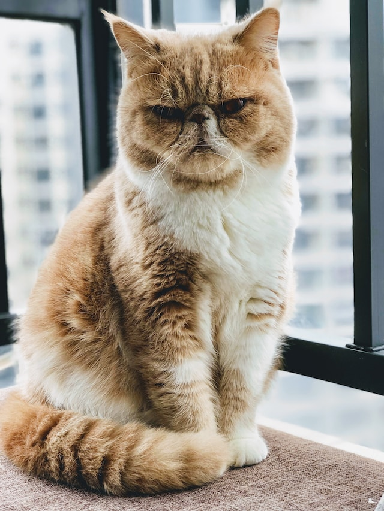

RagdollIslands
®
Available Kittens
Qeeens & Sires
Prievious Kittens
About
The breed
Contact
Become an owner
Ragdoll
Catlana Ragdoll Cats | Adorable Ragdoll kittens in Idaho
Islands
üêæAvailable Kittensüêæ
Kittens waitting for new home.
